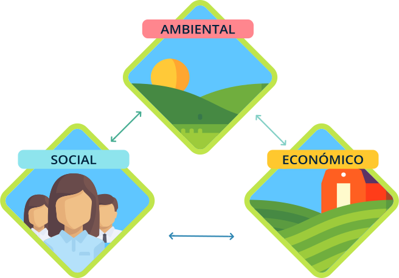
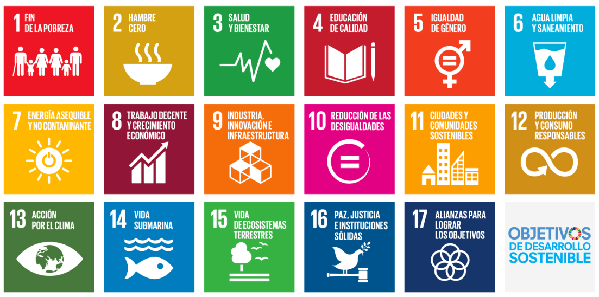
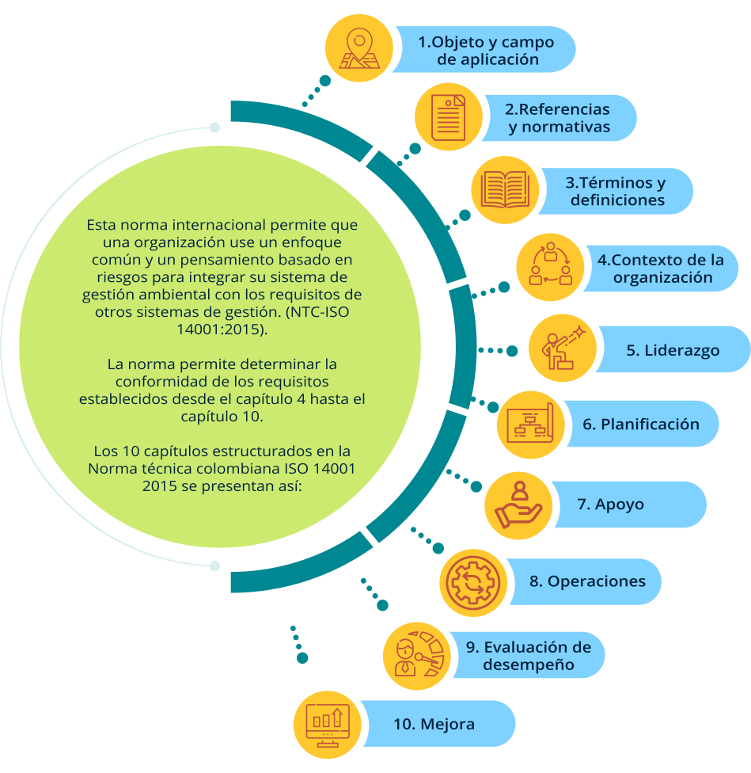
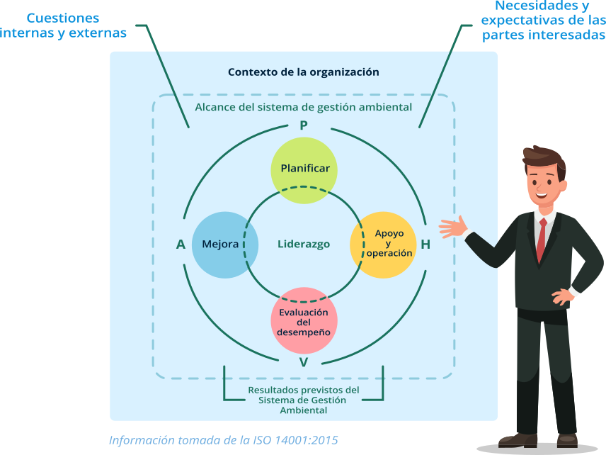
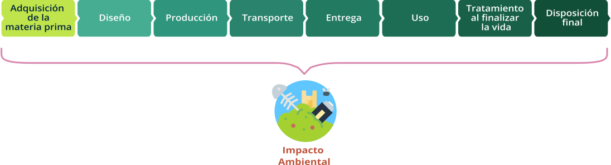
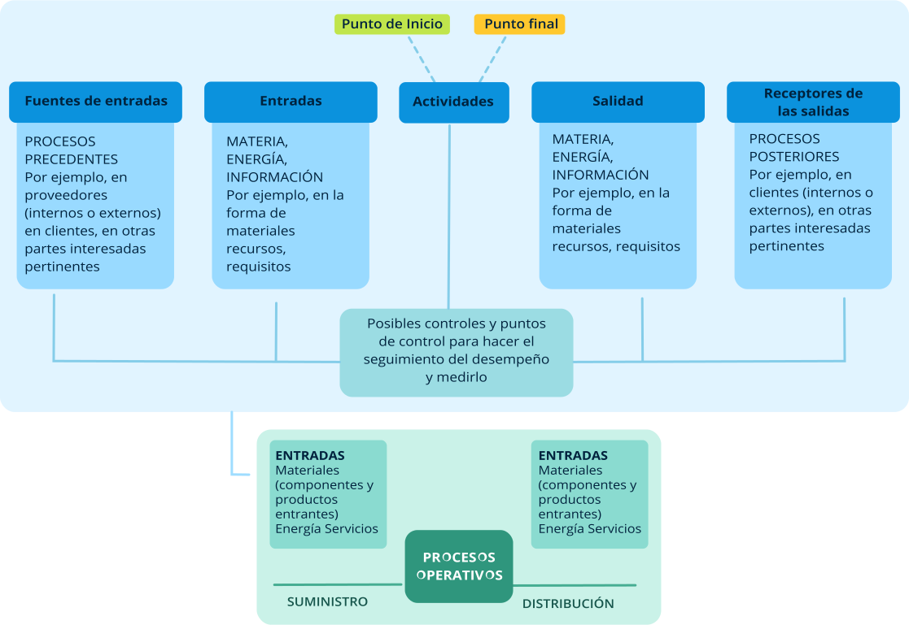

1. Componentes del medio ambiente
Medio ambiente: Es la interrelación de los medios naturales y socio económicos, comprendido por sistemas y componentes ambientales. De acuerdo a la NTC ISO 14001:2015, medio ambiente es el entorno en el cual una organización opera, incluidos el aire, el agua, el suelo, los recursos naturales, la flora, la fauna, los seres humanos y sus interrelaciones (NTC-ISO 14001:2015).
Componentes del medio ambiente
Es la interrelación de los medios naturales y socio económicos, comprendido por sistemas y componentes ambientales. De acuerdo a la NTC ISO 14001:2015, medio ambiente es el entorno en el cual una organización opera, incluidos el aire, el agua, el suelo, los recursos naturales, la flora, la fauna, los seres humanos y sus interrelaciones (NTC-ISO 14001:2015).
El medio natural está comprendido por todos los elementos abióticos o físicos que condicionan la vida, estos elementos abióticos o factores ambientales pueden o no cambiar dependiendo del mismo medio natural o del medio social ocasionando impactos ambientales, por ejemplo, la emisión de sulfuro de hidrógeno y amoníaco causado por la disposición de residuos peligrosos puede lograr alterar la calidad del aire generando olores ofensivos y la presencia de ruido generado por el tráfico vehicular puede superar los niveles permisibles de ruido logrando la contaminación auditiva.
Es medio antrópico ocasionado por el hombre, comprendido por los componentes demográfico, económico, cultural y políticos, los factores ambientales definidos en estos componentes pueden referirse a la salud, natalidad, formas de organización existente, formas de tenencia de tierra, estructura familiar, etc.
Desarrollo sostenible
La NTC ISO 14000 tiene un enfoque sistémico. El enfoque sistemático a la gestión ambiental puede proporcionar información a la alta dirección para generar éxito a largo plazo y crear opciones para contribuir al desarrollo sostenible (NTC-ISO 14001:2015).
El desarrollo sostenible se ha definido como el desarrollo capaz de satisfacer las necesidades del presente sin comprometer la capacidad de las futuras generaciones para satisfacer sus propias necesidades (ONU 2015).
Y para alcanzar el desarrollo sostenible debe existir equilibrio entre sus tres pilares: ambiental, social y económico, respondiendo a la definición de desarrollo sostenible.
A continuación se presenta la interrelación de los tres pilares fundamentales del desarrollo sostenible.
Desde la adquisición de la materia prima a partir de los recursos naturales.
El agotamiento de los recursos naturales es un factor determinante para el desequilibrio de la sostenibilidad.
Objetivos de Desarrollo Sostenible (ODS)
En 2015, la ONU aprobó la Agenda 2030 sobre el Desarrollo Sostenible, una oportunidad para que los países y sus sociedades emprendan un nuevo camino para mejorar la vida de todos, sin dejar a nadie atrás. La Agenda cuenta con 17 Objetivos de Desarrollo Sostenible, que incluyen desde la eliminación de la pobreza hasta el combate al cambio climático, la educación, la igualdad de la mujer, la defensa del medio ambiente o el diseño de nuestras ciudades.
2. Generalidades ISO 14000. Antecedentes, familia de las ISO 14000
Estructura de alto nivel: enfoque y terminología común.
La norma internacional ISO 14001:2015 se genera conforme a los requisitos de ISO para normas de sistemas de gestión. Estos requisitos incluyen una estructura de alto nivel, texto esencial idéntico y términos comunes con definiciones esenciales, diseñadas para beneficiar a los usuarios en la implementación de múltiples normas ISO de sistemas de gestión (NTC-ISO 14001:2015).
Modelo PHVA: Planificar-Hacer-Verificar-Actuar
En la siguiente figura se presenta la relación entre el modelo PHVA y los siete (7) requisitos de la NTC ISO 14001:2015.
¿Qué es Planificar?
Establecer los objetivos necesarios para generar y proporcionar resultados de acuerdo con la política de la organización.
¿Qué es Verificar?
Hacer el seguimiento y medir los procesos respecto a la políta ambiental, incluidos sus compromisos, objetivos ambientales y criterios operacionales, e informar de sus resultados.
¿Qué es Hacer?
Implementar los procesos según lo planificado.
¿Qué es Actuar?
Emprender acciones para mejorar continuamente.
Pensamiento basado en riesgo: riesgos asociados a las actividades de la empresa.
Uno de los cambios importantes a considerar en la norma ISO 14001 versión 2015 es la gestión de riesgo, llevando a la organización a reconocer los riesgos para:
Asegurar que el sistema de gestión ambiental pueda lograr sus resultados previstos.
Prevenir o reducir los efectos no deseados, incluida la posibilidad de que condiciones ambientales externas afecten a la organización.
Lograr la mejora continua.
Ciclo de vida del producto y servicio
Según la norma técnica colombiana ISO 14001 2015, el ciclo de vida de un producto y servicio son las etapas consecutivas e interrelacionadas de un sistema de producto o de servicio, desde la adquisición de la materia prima o su generación a partir de los recursos naturales, hasta la disposición final (NTC-ISO 14001:2015).
A continuación se indican las etapas del ciclo de vida:
Según los especialistas, el análisis del ciclo de vida ACV es una herramienta importante en la obtención de informaciones detalladas para el proceso de toma de decisiones en ingeniería. Así, si existe la oportunidad de escoger entre una gama de materiales y procesos de obtención y manufactura, las decisiones solamente pueden ser consideradas coherentes si fuesen tomadas con base en el análisis crítico, en particular al histórico de los materiales a ser empleados en la producción industrial (Guevara, 2006).
Enfoque basado en procesos flujogramas. Entradas, salidas y procesos.
Teniendo como referencia la NTC ISO 9000:2015, consideramos el enfoque basado en procesos.
De acuerdo con la NTC ISO 14001:2015, proceso es el conjunto de actividades interrelacionadas o que interactúan, que transforman las entradas en salidas (NTC-ISO 14001:2015).
En todas las etapas del ciclo de vida del producto, bien o servicio, se generan aspectos ambientales, y como consecuencia, impactos ambientales.
Ejemplo
| ENTRADAS O INSUMOS | ACTIVIDADES | SALIDAS (PRODUCTOS / SERVICIO) |
|---|---|---|
| Frutas: fresa, mora, uchuva, tomate de árbol, plátano. Tubérculo: papa. | Recepción de frutas. | Residuos ordinarios, aprovechables. Energía eléctrica y mecánica. |
| Fresa, mora, uchuva, tomate de árbol, plátano. Tubérculo: papa. | Selección, descarte y clasificación de frutas. | Residuos orgánicos. |
| Agua potable | Desinfección de fruta | Vertimientos domésticos con hipoclorito de sodio. |
| Frutas en buenas condiciones, agua potable, energía eléctrica. | Pelado y corte de fruta. | Residuos ordinarios, aprovechables. Energía lumínica, vertimientos domésticos. |
| Fruta cortada y pelada, energía eléctrica. | Despulpado de frutas. | Residuos ordinarios, aprovechables. Energía mecánica. |
3: Términos y definiciones usadas en un SGA.
El capítulo tres de la norma técnica colombiana ISO 14001:2015, hace referencia a los términos y definiciones, los cuales están organizados teniendo en cuenta el ciclo PHVA, como también los siete (7) requisitos de la NTC ISO 14001:2015, indicados desde el capítulo 4 hasta el capítulo 10.
La comprensión de la NTC ISO 14001:2015 inicia con los términos y definiciones siguiendo el modelo PHVA.
Recurso clave
En el siguiente enlace a la biblioteca digital encontrará la norma técnica colombiana ISO 14001:2015.
Biblioteca - digital: ISO 14001:2015.
Glosario
Aspecto ambiental:Elemento de las actividades, productos o servicios de una organización que interactúa o puede interactuar con el medio ambiente.
Ciclo de vida:Etapas consecutivas e interrelacionadas de un sistema de producto (o servicio), desde la adquisición de materia prima o su generación a partir de recursos naturales hasta la disposición final.
Impacto ambiental:Cambio en el medio ambiente, ya sea adverso o beneficioso, como resultado total o parcial de los aspectos ambientales de una organización.
Medio ambiente:Entorno en el cual una organización opera, incluidos el aire, el agua, el suelo, los recursos naturales, la flora, la fauna, los seres humanos y sus interrelaciones.
Mejora continua:Actividad recurrente para mejorar el desempeño.
Organización:Persona o grupo de personas que tienen sus propias funciones y responsabilidades, autoridades y relaciones para el logro de sus objetivos.
Prevención de la contaminación:Utilización de procesos, prácticas, técnicas, materiales, productos, servicios o energía para evitar, reducir o controlar (en forma separada o en combinación) la generación, emisión o descarga de cualquier tipo de contaminante o residuo, con el fin de reducir impactos ambientales adversos.
Requisito:Necesidad o expectativa establecida, generalmente implícita u obligatoria.
Riesgo:Efecto de la incertidumbre.
Sistema de gestión:Conjunto de elementos de una organización interrelacionados o que interactúan para establecer políticas, y objetivos y procesos para el logro de estos objetivos.
Sistema de gestión ambiental:Parte del sistema de gestión usada para gestionar aspectos ambientales, cumplir los requisitos legales y otros requisitos, y abordar los riesgos y oportunidades.
Material complementario
| Nombre del documento o material. | Tipo de material. | Enlace del Recurso. |
|---|---|---|
| ICONTEC (2016) NTC ISO 14004 SISTEMAS DE GESTIÓN AMBIENTAL. DIRECTRICES GENERALES SOBRE LA IMPLEMENTACIÓN | Norma | Descargar |
| ICONTEC (2015) NTC ISO 14001. Sistemas de Gestión Ambiental, Requisitos con Orientación para su Uso | Norma | Descargar |
| ICONTEC (2016) NTC ISO 14031 GESTIÓN AMBIENTAL. EVALUACIÓN DEL DESEMPEÑO AMBIENTAL. DIRECTRICES | Norma | Descargar |
| ICONTEC (2015) NTC ISO 9001. SISTEMAS DE GESTIÓN DE LA CALIDAD. REQUISITOS | Norma | Descargar |
Referencias bibliográficas
Carlos Fernando, F. (1996). 1996 (Vol. 1) [Libro electrónico]. Servicio Nacional de Aprendizaje (SENA). https://hdl.handle.net/11404/4580
ICONTEC. (2015, 23 septiembre). NTC ISO 14001. SISTEMAS DE GESTIÓN AMBIENTAL, REQUISITOS CON ORIENTACIÓN PARA SU USO https://e-collection-icontec-org.bdigital.sena.edu.co/pdfview/viewer.aspx?locale=es-419&Q=6B06EF84B73EF82F8C0BEC96DA30B6DD2B1DA961E0A07526&Req=
ICONTEC (2015) NTC ISO 9001. SISTEMAS DE GESTIÓN DE LA CALIDAD. REQUISITOS. https://e-collection-icontec-org.bdigital.sena.edu.co/normavw.aspx?ID=6496
ICONTEC (2016) NTC ISO 14004 SISTEMAS DE GESTIÓN AMBIENTAL. DIRECTRICES GENERALES SOBRE LA IMPLEMENTACIÓN. https://e-collection-icontec-org.bdigital.sena.edu.co/normavw.aspx?ID=6129
ICONTEC (2016) NTC ISO 14031 GESTIÓN AMBIENTAL. EVALUACIÓN DEL DESEMPEÑO AMBIENTAL. DIRECTRICES. https://e-collection-icontec-org.bdigital.sena.edu.co/normavw.aspx?ID=6137
ONU. (2015). Objetivos de desarrollo sostenible. Naciones Unidas. https://www.un.org/sustainabledevelopment/es
Fotografías y vectores tomados de https://www.shutterstock.com/ y https://www.freepik.es/
Licencia Creative Commons
CC BY-NC-SA
Ver licencia.